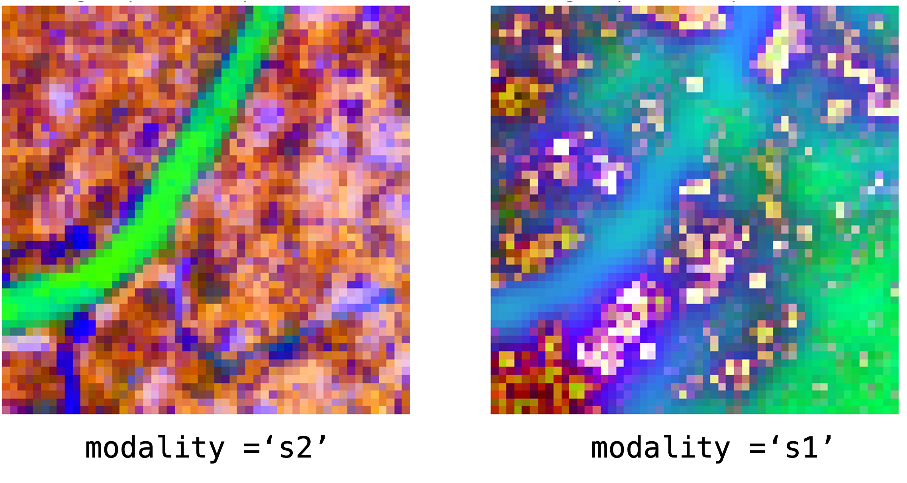
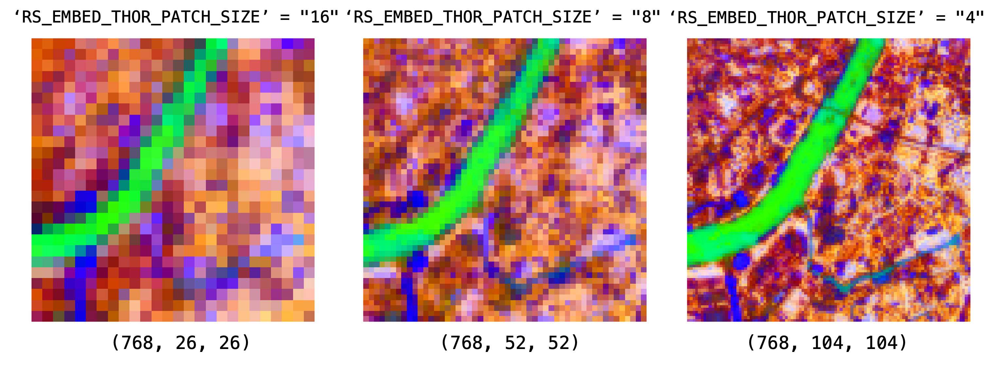

THOR (thor)¶
Quick Facts¶
| Field | Value |
|---|---|
| Model ID | thor |
| Aliases | thor_1_0_base |
| Family / Backbone | Fully vendored THOR runtime (thor_v1_tiny / thor_v1_small / thor_v1_base / thor_v1_large) |
| Adapter type | on-the-fly |
| Model config keys | variant (default: base; choices: tiny, small, base, large) |
| Training alignment | High when thor_stats normalization and default S2 SR setup are preserved |
THOR In 30 Seconds
THOR in rs-embed can run either a Sentinel-2 SR 10-band path or a Sentinel-1 VV/VH path, and it works well when you want either a pooled embedding or a grid-like token output while preserving THOR's channel-group structure.
In rs-embed, its most important characteristics are:
- grouped token layout instead of one ready-made spatial feature map: see Output Semantics
- patch-size-sensitive token density and geometry: see Environment Variables / Tuning Knobs
- bounded
native_snappreprocessing for small near-square projection mismatches: see Preprocessing Pipeline
Quick Decision Guide¶
Use input_prep="resize" with the default RS_EMBED_THOR_RESIZE_MODE=native_snap.
This handles small projection mismatches without forcing an immediate 288x288 resize.
Use input_prep="tile".
This avoids token explosion and keeps stitched grid geometry stable.
Use RS_EMBED_THOR_GROUP_MERGE=concat.
This keeps aligned group maps separate in the channel dimension instead of collapsing them into one shared grid.
What Usually Goes Wrong
Most THOR confusion comes from three places: changing patch_size without checking that image_size still divides cleanly, assuming native_snap should also apply inside tiled inference, and interpreting concat grids as directly comparable to mean grids. Treat those as different representation settings, not just cosmetic options.
Input Contract¶
Provider-only backend (gee / auto). TemporalSpec is normalized to a range via the shared helper; TemporalSpec.range(...) is recommended for reproducibility — the temporal window controls compositing rather than locking to one acquisition. Side inputs: none.
| Modality | Collection | Bands (order) | input_chw |
Default normalization | Extra fetch fields |
|---|---|---|---|---|---|
s2 (default) |
COPERNICUS/S2_SR_HARMONIZED |
B2,B3,B4,B5,B6,B7,B8,B8A,B11,B12 (10-band) |
CHW, C=10, raw SR 0..10000 |
thor_stats z-score after /10000 |
scale_m=10, cloudy_pct=30, composite="median", fill_value=0.0 |
s1 |
COPERNICUS/S1_GRD_FLOAT |
VV, VH (2-band) |
CHW, C=2 in VV,VH, raw VV/VH |
shared S1 log1p + p99 scaling |
use_float_linear=True, s1_require_iw=True, s1_relax_iw_on_empty=True |
Before normalization, the adapter clips NaN/Inf values and clamps raw SR to 0..10000. Set RS_EMBED_THOR_NORMALIZE=none to bypass the default normalization on either modality.
Preprocessing Pipeline¶
flowchart LR
INPUT["Provider fetch\n/ input_chw"] --> MOD{Modality}
MOD -- "s2 (default)" --> S2["S2 10-band"]
MOD -- s1 --> S1["S1 VV/VH"]
S2 --> PIPE["Geometry policy → Normalize\n→ Optional resize to 288×288"]
S1 --> PIPE
PIPE --> FWD["THOR backbone\n→ tokens [N,D]"]
FWD --> POOL["pooled: mean/max"]
FWD --> GRID["grid: group-aware layout"]Architecture Concept¶
flowchart LR
S2["S2 10-band\n/ S1 VV/VH"] --> GRP["Channel groups\n→ per-group patch embed"]
GRP --> TF["Transformer"]
TF --> GM{group_merge}
GM -- mean --> MEAN["Averaged grid (D,H,W)"]
GM -- concat --> CAT["Per-group channels (D×G,H,W)"]Environment Variables / Tuning Knobs¶
| Env var | Default | Effect |
|---|---|---|
RS_EMBED_THOR_MODEL_KEY |
thor_v1_base |
THOR backbone key for the vendored runtime |
RS_EMBED_THOR_CKPT |
unset | Local checkpoint path override |
RS_EMBED_THOR_PRETRAINED |
1 |
Use pretrained weights (HF default path) |
RS_EMBED_THOR_IMG |
288 |
Resize target image size |
RS_EMBED_THOR_RESIZE_MODE |
native_snap |
native_snap keeps bounded snapped native sides; fixed always resizes to RS_EMBED_THOR_IMG |
RS_EMBED_THOR_NORMALIZE |
thor_stats |
S2: thor_stats, unit_scale, or none; S1: thor_stats (shared S1 log normalize) or none |
RS_EMBED_THOR_GROUP_MERGE |
mean |
THOR group-grid aggregation: mean, sum, concat |
RS_EMBED_THOR_PATCH_SIZE |
8 |
THOR flexi patch size parameter |
RS_EMBED_THOR_SHAPE_ADJUST |
crop |
How native_snap resolves small non-square inputs: crop or pad |
RS_EMBED_THOR_SHAPE_TOL_PX |
8 |
Maximum abs(H-W) tolerated before native_snap falls back to fixed resize |
RS_EMBED_THOR_MAX_NATIVE_SIDE |
384 |
Largest snapped native side allowed before falling back to fixed resize |
RS_EMBED_THOR_MAX_NATIVE_TOKENS |
3000 |
Largest estimated THOR patch-token count allowed for native_snap |
RS_EMBED_THOR_FETCH_WORKERS |
8 |
Provider prefetch workers for batch APIs |
patch_size changes token density, not embedding dimension. Smaller patch sizes mean denser token grids and more compute.
Keep RS_EMBED_THOR_IMG divisible by 2 * RS_EMBED_THOR_PATCH_SIZE for the current S2 10m/20m path. If you are unsure, keep RS_EMBED_THOR_IMG=288 and change only patch_size to one of the known-compatible values such as 4, 6, 8, 12, 16, or 18.
input_prep="resize" means one whole input patch goes through THOR once; in that path the adapter may use native_snap.
input_prep="tile" means the API slices a larger input into multiple tiles first; inside that tiled path THOR intentionally uses fixed per-tile resize behavior so the stitched output still maps cleanly back to the tile layout.
native_snap is intentionally bounded. It only stays on the native path when the input is close to square, the snapped side does not exceed RS_EMBED_THOR_MAX_NATIVE_SIDE, and the estimated THOR patch-token count does not exceed RS_EMBED_THOR_MAX_NATIVE_TOKENS.
For the current default S2 10m/20m path with patch_size=8, side=384 corresponds to about 2880 patch tokens, which is why 384 is the default ceiling.
Model-specific Settings¶
variant selects the THOR backbone size. In rs-embed, pass it as variant="tiny" | "small" | "base" | "large".
| Variant | Vendored model key | Parameters | Output channels | Transformer blocks | Attention heads | Notes |
|---|---|---|---|---|---|---|
tiny |
thor_v1_tiny |
7.6M | 192 | 12 | 3 | Smallest and fastest option. |
small |
thor_v1_small |
25.8M | 384 | 12 | 6 | Middle ground when tiny is too limited. |
base |
thor_v1_base |
94.1M | 768 | 12 | 12 | Current default. |
large |
thor_v1_large |
314.4M | 1024 | 24 | 16 | Highest capacity and heaviest runtime. |
How To Read Output Channels
Output channels here means the default THOR embedding width for pooled output and for grid output when group aggregation keeps one shared channel space, such as RS_EMBED_THOR_GROUP_MERGE=mean or sum.
If you use RS_EMBED_THOR_GROUP_MERGE=concat, the final grid channel count becomes embedding_width x number_of_THOR_groups, so it is larger than the values listed above.
Example:
from rs_embed import PointBuffer, TemporalSpec, OutputSpec, get_embedding
emb = get_embedding(
"thor",
spatial=PointBuffer(lon=121.5, lat=31.2, buffer_m=2048),
temporal=TemporalSpec.range("2022-06-01", "2022-09-01"),
output=OutputSpec.pooled(),
backend="gee",
variant="large",
)
Output Semantics¶
OutputSpec.pooled()¶
OutputSpec.pooled() pools the token sequence through _pool_thor_tokens(...). When the expected THOR patch-token count is available, the adapter uses it to avoid pooling non-patch tokens incorrectly. Metadata records the pooling mode and cls_removed.
OutputSpec.grid()¶
OutputSpec.grid() first tries to build a THOR group-aware grid with grid_kind="thor_group_grid" from the channel groups. If that fails, it falls back to a generic ViT-style patch-token reshape with grid_kind="patch_tokens". Some token layouts still cannot be reshaped into a grid, in which case the adapter raises a clear error and suggests using pooled output.
The group-aware path exists because native THOR emits one token sequence plus layout metadata, not one uniform spatial tensor. rs-embed uses that metadata to reconstruct per-group feature maps, upsamples lower-resolution groups onto the densest group grid, and then applies group_merge.
Use this unless you have a specific reason not to.
It averages aligned group maps into one shared grid, keeps output dimensionality stable, and is the easiest setting to compare across runs.
Use this when you want one shared grid but prefer additive responses over averaging.
It is more sensitive to feature scale than mean.
Use this only when downstream code expects a wider channel dimension and you explicitly want to preserve group-specific information instead of collapsing it.
Examples¶
Minimal example:
from rs_embed import get_embedding, PointBuffer, TemporalSpec, OutputSpec
emb = get_embedding(
"thor",
spatial=PointBuffer(lon=121.5, lat=31.2, buffer_m=2048),
temporal=TemporalSpec.range("2022-06-01", "2022-09-01"),
output=OutputSpec.pooled(),
backend="gee",
)
from rs_embed import get_embedding, PointBuffer, TemporalSpec, OutputSpec
emb = get_embedding(
"thor",
spatial=PointBuffer(lon=121.5, lat=31.2, buffer_m=2048),
temporal=TemporalSpec.range("2022-06-01", "2022-09-01"),
modality="s1",
output=OutputSpec.pooled(),
backend="gee",
)
This switches THOR onto the default VV,VH Sentinel-1 path. If you need a different provider collection, pass an explicit SensorSpec(..., modality="s1").

export RS_EMBED_THOR_RESIZE_MODE=native_snap
export RS_EMBED_THOR_NORMALIZE=thor_stats
export RS_EMBED_THOR_GROUP_MERGE=mean
export RS_EMBED_THOR_IMG=288
export RS_EMBED_THOR_PATCH_SIZE=8
export RS_EMBED_THOR_RESIZE_MODE=native_snap
export RS_EMBED_THOR_SHAPE_ADJUST=crop
export RS_EMBED_THOR_SHAPE_TOL_PX=8
export RS_EMBED_THOR_MAX_NATIVE_SIDE=384
export RS_EMBED_THOR_MAX_NATIVE_TOKENS=3000
This lets THOR keep a snapped native side for near-square inputs such as 289x288 or 300x300, but still falls back to fixed resize for larger or more expensive inputs.
export RS_EMBED_THOR_IMG=288
export RS_EMBED_THOR_PATCH_SIZE=4
Use a smaller patch_size when spatial detail matters more than runtime or memory.
export RS_EMBED_THOR_IMG=288
export RS_EMBED_THOR_PATCH_SIZE=12
Use a larger patch_size when you want a coarser token grid with lower compute cost.
export RS_EMBED_THOR_IMG=280
export RS_EMBED_THOR_PATCH_SIZE=10
When patch_size no longer divides cleanly, change RS_EMBED_THOR_IMG together with it.

from rs_embed import get_embedding, PointBuffer, TemporalSpec, OutputSpec, InputPrepSpec
emb = get_embedding(
"thor",
spatial=PointBuffer(lon=121.5, lat=31.2, buffer_m=4096),
temporal=TemporalSpec.range("2022-06-01", "2022-09-01"),
output=OutputSpec.grid(pooling="mean"),
backend="gee",
input_prep=InputPrepSpec.tile(tile_size=288),
)
In this mode the large input is split into 288x288 tiles. Each tile uses THOR's fixed per-tile resize path rather than native_snap, so stitched grid outputs stay aligned with the tile layout.
from rs_embed import get_embedding, PointBuffer, TemporalSpec, OutputSpec
emb = get_embedding(
"thor",
spatial=PointBuffer(lon=121.5, lat=31.2, buffer_m=2048),
temporal=TemporalSpec.range("2022-06-01", "2022-09-01"),
output=OutputSpec.grid(pooling="mean"),
backend="gee",
variant="small",
)
Use variant only for backbone size selection. Other THOR runtime knobs such as image size, normalization, patch size, and checkpoint override still use the environment-variable path above.
Paper & Links¶
- Publication: arXiv 2026
- Code: FM4CS/THOR
Reference¶
- Changing
patch_sizewithout updatingimage_sizeto divide cleanly is the most common misconfiguration. native_snaponly applies ininput_prep="resize"mode — tiled inference always uses fixed per-tile resize.group_merge=concatandgroup_merge=meanproduce different channel dimensions; do not compare them directly.- Grid construction can fail if the token layout is not square and group parsing cannot resolve it — fall back to
pooledto isolate the issue.